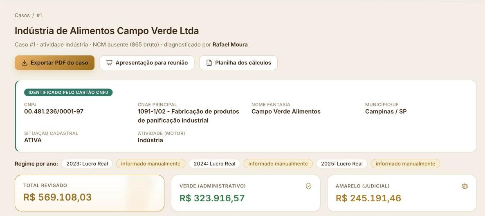
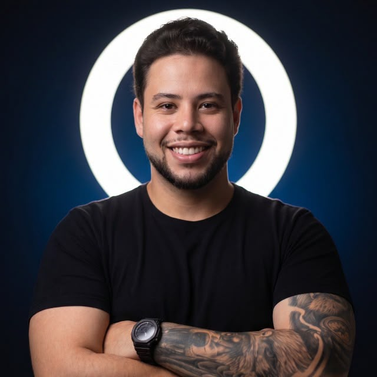

A IA não faz a conta
A conta sai em código e dá o mesmo resultado toda vez. Cada valor vem com a memória de cálculo: fórmula, CFOP, CST, período e passo a passo, relatório por relatório. A IA entra para classificar, fundamentar e redigir.
O crédito do seu cliente prescreve enquanto o Excel do analista está na terceira aba.
Você sobe o Cartão CNPJ e os relatórios do MA. O sistema desconta o que o cliente já aproveitou, separa cada tese em administrativa e judicial e dá nota de risco de A a D. A IA classifica e redige, a conta sai em código com memória de cálculo, e o seu analista revisa e aprova.
Gratuito. O vídeo abre assim que você se cadastra.
A conta sai em código e dá o mesmo resultado toda vez. Cada valor vem com a memória de cálculo: fórmula, CFOP, CST, período e passo a passo, relatório por relatório. A IA entra para classificar, fundamentar e redigir.
O sistema cruza o M200/M210 e o E111 e desconta o que já foi escriturado. Também tira os NCMs monofásicos e de alíquota zero, e avisa quando dois relatórios cobrem o mesmo período.
Cada achado passa por ele, que confirma, ajusta ou descarta. O que depende de documento, como o laudo da energia elétrica, aparece como pendente e fica separado do total.
Telas do sistema em ambiente de demonstração, com dados fictícios.
O analista sobe o Cartão CNPJ e todos os relatórios do MA de uma vez. O sistema lê CNPJ, CNAE e atividade, e libera as teses de indústria só quando a empresa é indústria.
Tela do sistema · novo diagnósticoICMS na base do PIS/Cofins, entrada sem crédito de ICMS, ICMS-ST, PIS/Cofins na própria base. Verde para administrativo, amarelo para tese judicial, nota de A a D.
Com a regra escrita, o levantamento não depende de ninguém lembrar a ordem.
Tela do sistema · achados do casoO PDF do caso, a planilha dos cálculos e a apresentação com a marca do escritório: dados da empresa, crédito encontrado, passivo e proposta.
Ninguém da equipe monta slide.
Tela do sistema · os três arquivos do caso
 Os três arquivos
Os três arquivosO analista sobe os PDFs do e-CAC, da PGFN e do CAPAG, mesmo escaneados e com qualquer nome de arquivo. O sistema concilia Receita, dívida ativa, estadual e débito corrente, aponta os pontos críticos e lista o que falta para fechar o número.
Um Excel para cada tese, cruzado à mão, e depois o diagnóstico e os slides montados empresa por empresa.
O analista sobe os arquivos e revisa os achados. A conta, o desconto do que já foi aproveitado, as notas e os slides ficam com o sistema.
Aqui era o cruzamento de planilha. No seu escritório pode ser o extrato em PDF, a guia que precisa chegar ao cliente ou o honorário que ninguém reajustou. Otavio já tirou três tarefas da mão de uma equipe:
O caso deste vídeo.
No piloto, 90% das transações de dois meses saíram classificadas sozinhas.
O que está atrasado aparece de manhã, as guias saem em lote com aviso de quem baixou e o honorário defasado aparece sozinho.
O deste vídeo leva o nome do escritório, não o do Otavio. Feito para a sua operação, do jeito que a sua equipe trabalha.

Em abril, numa viagem com contadores de São Paulo, todo mundo na mesa dizia que usava IA. Usavam para conversar no chat. Otavio foi ao escritório de um deles e transformou o trabalho do analista neste sistema.
É sucessor de um escritório com mais de 30 anos em Uberaba-MG, fundado pelo avô e pelo pai, onde hoje cuida da gestão.
No fim do vídeo, Otavio abre a agenda: 40 minutos olhando o seu escritório para escolher a primeira rotina que sai da mão da equipe.
Gratuito. O vídeo abre assim que você se cadastra.